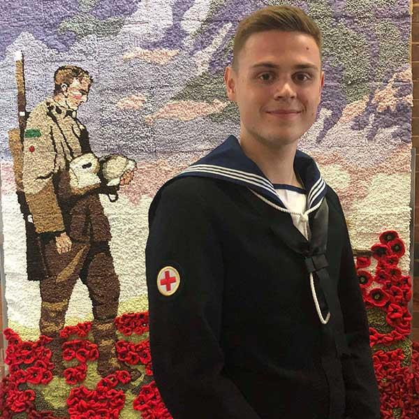
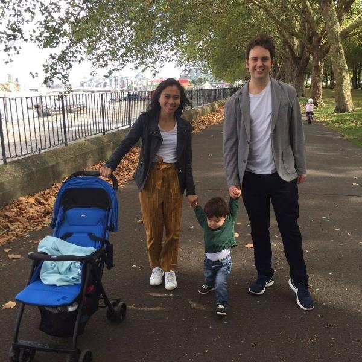

A Demon's Whispers, a story inspired by Damon Thorley's epilepsy
Damon is a 26 year old author, who recently published his debut book 'A Demon's Whispers', where the main antagonist
is heavily based from his experience of living with epilepsy. He tells us about his life with epilepsy, everything
from dealing with bullying in school, and depression.
By Maytee Ramos, April 18, 2024
Artist Noemi Manser: Art has been her safe, healing space.
Noemi Manser, a Swiss born conceptual artist and muralist, grew up with epilepsy. Her art series ‘Connecting Brains’
depicts symbolic androgynous faces which she hopes will highlight the importance of uniting individuals and encouraging
human connections.
By Noemi Manser, 3 November, 2022
The challenge of becoming a mum with epilepsy
Lyndsey, 26, describes the impact that her epilepsy has had on her and her little boy, Caelan, and explains why she and
her partner have opted for genetic screening before having a second baby by IVF.
By Nicola Swanborough, 5 May, 2021

How epilepsy cost me my dream career
Dan was 21 and serving as a medic in the Royal Navy when he was diagnosed with epilepsy. He was devastated to lose his
dream job but is determined not to let epilepsy define him. He is now studying nursing at university and has applied
to join the police. He hopes his story will help others, particularly those in the armed forces.
By Nicola Swanboroug, 14 October, 2021

Why epilepsy means I can't read to my son for longer than five minutes
Chris Sharp talks about how his epilepsy is triggered by reading and how he cannot share a book with his young son for
longer than five minutes
By Nicola Swanboroug, 4 March, 2021
Why NICE is right to be cautious about recommending medicinal cannabis for two childhood epilepsy syndromes
Last week, the UK's medical advisory body, NICE, announced it would not be recommending that cannabidiol, a medicinal
cannabis in the form of Epidyolex